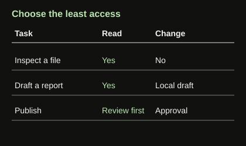

Use a tool with a test
Choose a small task, limit its permissions and define the result you will accept.
On this page
Start with four layers
| Layer | First choice | Add it when |
|---|---|---|
| Agent client | Codex or Claude Code | Use one client for a baseline. Compare the same task and acceptance criteria before you switch. |
| Repository instructions | AGENTS.md or the client's repository instruction file | Keep test commands, project conventions and limits close to the project. |
| Skill | One local skill or one Matt Pocock skill | Add a procedure after the task repeats and has an observable pass condition. |
| Tool | Built-in local tools first. Add a scoped MCP server only for a missing capability. | Add browser tools for a local interaction check, or a reference source for current documentation. |
Use Superpowers as a full development workflow when several steps need coordination. Use Hallmark for a visual pass. Use Caveman only for short status text after you confirm it preserves details.


Build a small skill and test discovery
A skill is an instruction directory with SKILL.md and optional scripts, references and assets. The Agent Skills format defines frontmatter and the directory contract. Paths and discovery depend on the host. A plugin can bundle skills and MCP tools. [P25] [P26]
In a disposable repository, make .agents/skills/report-check/SKILL.md for Codex. Check your client's skill path before you reuse the example. [P52] Put the expected cents for two mock invoices in fixture.txt. Record the exact client version.
---
name: report-check
description: Check a local report fixture for arithmetic and source citations.
---
Read the report and fixture named in the task.
Check each amount against the fixture.
Check the sum in integer cents.
List one evidence reference for each check.
Mark facts with no fixture entry as Not in source.
Keep the report and fixture unchanged.Restart the session. Ask, “Use report-check to audit report.md against fixture.txt. Return checks and evidence only.” A good result shows the skill is available and catches an intentional one-cent error. If the skill is absent, check directory, filename, frontmatter and client documentation before you run again.
Allocate 15 minutes and one baseline run. Repeat on a second fixture only after the first pass. Add a reference file for long format rules. Keep the main instructions short. This setup follows public documentation and was not executed. [P25] [P26]
Matt Pocock skills · Resolve a rule with evidence
mattpocock/skills is an MIT collection from Matt Pocock. Tag v1.3.2 is the latest release observed by the cutoff. The collection offers a hosted plugin and file copies. Review the source and select one install method. Some engineering skills require tracker and domain-document setup. [P27] [P28] [P29]
Use a disposable Codex project with a glossary that defines “invoice date” but omits “due date.” Copy the reviewed grill-with-docs skill directory and its needed references into the active skill path. For the complete collection, follow the upstream Codex marketplace instructions. Run the setup skill if you need tracker integration. [P27] [P29]
Use grill-with-docs on this question: which date controls a late invoice?
Use the glossary and fixture. Ask one question at a time.
Draft glossary changes and one decision record after I answer.
Keep the issue tracker out of this exercise.Review each changed term and its source. The resulting decision needs an explicit answer about due date. If the procedure tries to access an unconfigured tracker, stop and use the repo-only setup. Disable duplicate installs if two copies appear. Time-box to 20 minutes and one decision. Extend it with a tdd pass once you agree on the rule. Documented exercise. [P27] [P29]
Superpowers · Plan and verify a small feature
obra/superpowers is Jesse Vincent's MIT software development workflow. Release v7.0.2 contains bootstrap fixes and changes to its brainstorming procedure. Supported channels vary by host. It needs a supported agent, a Git project for worktree steps, and a project test command. [P30] [P31]
Inspect the release and installation instructions. Select the official Codex plugin in its marketplace. Start in a disposable Git repository. Prepare a tiny search result list with zero and two result fixtures.
Use Superpowers to add an empty state to the results list.
First propose the acceptance checks. Wait for approval of the design.
Use the existing test runner. Show the before and after test output.
Finish with a local diff and keep all branch changes local.Confirm the design covers both counts. Require an actual failing test, a passing test and a reviewed diff. If the worktree or test runner fails, capture the error and return to a clean local baseline. Allocate 30 minutes. Compare elapsed time and review defects against the same task with a plain prompt. Documented exercise. [P30] [P31]
Caveman · Check short status output
The supplied name “Cavemen” points to a credible candidate named caveman by Julius Brussee. Upstream provides an MIT skill and separately documents runtime, compression and middleware components. Caveman 4.1.0 is a maintenance release. Limit the exercise to the skill. [P32] [P33] [P34]
Inspect and use the host-specific install for the reviewed skill only. Start with the sentence “The local test found 2 failures. The command exited with status 1. The report stays in draft.” Ask, “Use Caveman to shorten this status note. Preserve the count, exit status and draft state.”
Check all three details and compare measured output length at the same model. If a fact disappears, use ordinary prose or disable the skill. Stop after two responses and 10 minutes. Extend by testing an incident summary with explanations kept in full. Documented exercise. [P32] [P33]
Hallmark · Review a visual hierarchy
Nutlope/hallmark is a public design skill candidate with a 2.0.0 MIT manifest and no published GitHub release in the checked release index. Record the reviewed commit. Other public skills share the Hallmark name. Match the repository to the intended skill before you install it. [P35] [P36] [P37] [P38]
Copy the reviewed skill and references into a disposable project. Use a static mock page with a title, a two-column list and one primary button. Disable optional services by omitting their credentials. Use the host's local preview. Some Hallmark scripts require Node and external tools or services. [P37]
Use Hallmark to review this existing page. Keep all information and controls.
Check at 360 and 1280 CSS pixels. Improve type hierarchy, spacing and focus.
Use a plain background and one accent. Show the before and after screenshots.
Keep the change in this local project.Compare button visibility, reading order, keyboard focus and clipping. If companion tools are unavailable, use a local markup and browser review. Set aside 25 minutes. Extend the audited type and spacing to one more page after the first page passes. Documented exercise.
MCP · Read one fixture through a scoped server
Model Context Protocol links a host to a server. The public specification release checked here is 2026-07-28. An MCP resource supplies data, a prompt supplies a template, and a tool can retrieve information or act. A client may support only a subset. [P39] [P40]
Use Node.js 24 or newer for this exercise. Install reference Filesystem package 2.4.0 from repository release v2.5.0. The release identifies earlier packages as affected. Configure the host to run a local STDIO process. Create a disposable folder with public-note.txt containing Revision A. Total 350 cents. Expose only that folder. Use --read-only for the whole server. Use --confine-roots to restrict any client-supplied roots. Run the process in isolation with access only to the fixture where available. [P41] [P42] [P43] [P44]
node --version
codex mcp add fixture -- mcp-server-filesystem --read-only --confine-roots /absolute/path/to/disposable-fixture
codex mcp listStart a new Codex session. Use list_allowed_directories and confirm that only the exact canonical fixture directory appears. Stop if any other directory appears. Then ask, “Read public-note.txt with the fixture server. Return the exact total and its filename.” Check for 350 cents and confirm the file is unchanged. Inspect tools exposed by the client. If write tools appear or the server scope is too wide, remove the configuration and verify the version and arguments. If discovery fails, check the executable on PATH and the client logs. [P41] [P43]
Time-box to 20 minutes. Local server process cost and model usage are separate. Extend this only after the small fixture passes. Use the connector catalog to choose a second tool. Documented exercise.
Playwright MCP · Check a keyboard path
Microsoft's Playwright MCP can run a browser in an isolated context. Review its version and dependency requirements before you add it. Use a disposable profile and a review-only local page. [P45]
Serve a page with one input, one button and a success message. Use the official install instructions for a reviewed release. Start the server with its isolated profile option. Ask, “Open the local fixture. Use Tab and Enter to submit the sample form. Record focus order, success text and a screenshot. Stay on this local origin.”
Confirm that the screenshot and the event state match. If the browser launch fails, check the binary installation and local port. Run the keyboard check by hand if the browser tool remains unavailable. Allocate 20 minutes and one browser session. Extend with a second viewport. Documented exercise. [P45]